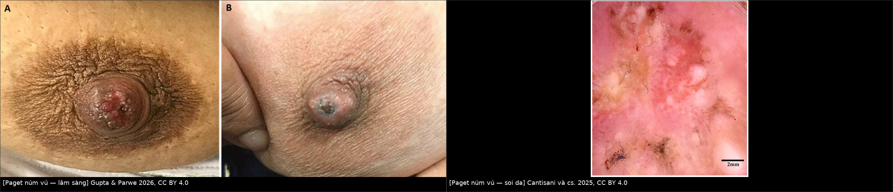
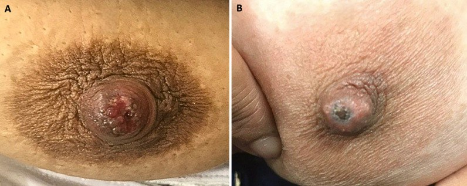
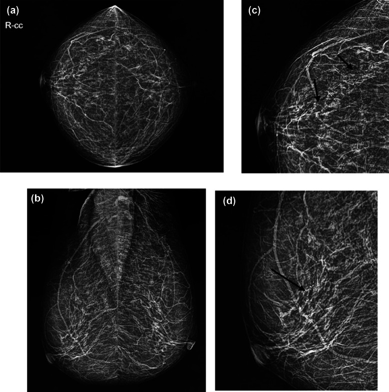
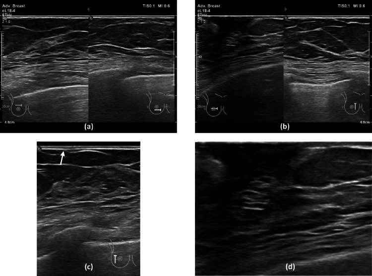
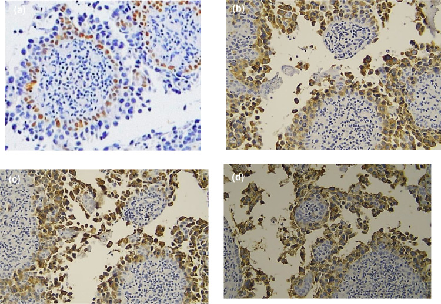

1690 — Bệnh Paget của núm vú / Mammary Paget disease (MPD)
Tags: pattern:trot-num-vu pattern:day-da-num-vu pattern:vi-voi-hoa pattern:ngam-num-vu vung:vu vung:num-vu score:BI-RADS score:TNM-AJCC8 protocol:nhu-anh-phong-dai protocol:MRI-vu protocol:sinh-thiet-da-num-vu incidentaloma:day-da-num-vu
Mức chắc chắn (certainty): tổng hợp y văn (literature synthesis) — số liệu đọc trực tiếp từ toàn văn 3 bài mở qua Europe PMC (Radiology Case Reports 2025, Diagnostics 2025, Pan African Medical Journal 2026) + 1 bài tổng quan (Cureus 2025); có ca nguyên văn dùng cho quiz (ảnh CC BY / CC BY-NC-ND).
1. Tổng quan — vì sao "chàm núm vú" lại là ung thư, và vì sao hình ảnh hay âm tính
- Bệnh học: tế bào Paget là tế bào tuyến ác tính lớn, bào tương sáng, nhân lớn, nucleolus rõ, nằm rải rác/đám trong biểu bì núm vú–quầng vú (không phải tế bào da tại chỗ). Chúng thường di chuyển theo kiểu hướng biểu bì (epidermotropism) từ DCIS trong ống tuyến dưới quầng ra da — vì vậy MPD là dấu hiệu bề mặt của một bệnh ống tuyến nằm sâu.
- Tần suất (định lượng): MPD chiếm 1–3% tổng số ung thư vú; tỷ lệ mắc theo dân số 0,42/100.000 (đô thị Trung Quốc 2016), tài liệu chung ghi < 5%** ung thư vú. **> 93% (một số tổng quan: > 90%, 80–90% khi gộp DCIS + IDC) MPD có ung thư vú nằm dưới; chỉ < 10% có khối sờ thấy.
- Vì sao nhũ ảnh hay ÂM TÍNH (tới ~50%): tổn thương nằm trong lòng ống + trong biểu bì, không tạo khối. Nhũ ảnh chỉ thấy khi có vôi hóa do hoại tử comedonecrosis (canxi lắng trên mảnh tế bào chết) → vi vôi hóa đa hình (fine pleomorphic) / phân nhánh tuyến tính — tức là dấu hiệu của DCIS, không phải của da. Vì vậy "nhũ ảnh bình thường" KHÔNG loại trừ MPD; cần phóng đại núm vú + 1/3 trước tuyến vú.
- Vì sao MRI nhạy hơn: DCIS tân mạch hóa + viêm/ngấm ở núm → ngấm thuốc dạng không khối (non-mass enhancement) và ngấm thuốc núm vú — những thay đổi chưa đủ canxi để thấy trên nhũ ảnh. Một loạt 34 ca: sau nhũ ảnh âm, MRI phát hiện bệnh ẩn ở 50%.
- Vì sao siêu âm thấy "dày da núm": phù + tế bào u + xơ ở trung bì → dày da ≥ 2 mm (da thành ngực bình thường 1–2 mm) và mất phân lớp; kèm giãn ống tuyến dưới quầng và tăng tưới máu núm (một loạt: dòng máu núm phong phú 24,66%, tổn thương ác ở nơi khác 67,12%).
- Thời gian chẩn đoán muộn là quy luật: triệu chứng kéo dài nhiều tháng đến nhiều năm vì bị điều trị như chàm; ca nguyên văn ~1 năm, ca soi da 6 tháng không đáp ứng corticoid bôi.
- Điểm phản biện (trung thành nguồn): một loạt mổ 417 ca báo 95% IDC, 3,4% DCIS, 1,7% không có ung thư dưới; con số IDC trội này ngược với đa số y văn (DCIS là nền tảng sinh bệnh học) → nhiều khả năng do chọn bệnh nhân đã mổ. Không dùng tỷ lệ đó để lập luận "MPD thường có khối xâm lấn"; dùng > 90% có ung thư dưới, trong đó DCIS là thể nền là an toàn hơn.
2. Mẫu hình + chẩn đoán phân biệt theo vị trí và hình thái (Gamut)
- Khuôn 1 — Trợt/đóng vảy/ẩm ướt MỘT BÊN ở núm–quầng, ngứa rát, không đáp ứng corticoid. Gamut: MPD vs chàm/viêm da tiếp xúc vs u tuyến núm (nipple adenoma) vs Bowen/SCC tại chỗ vs bệnh Paget hắc tố (pigmented Paget, nhầm hắc tố ác) vs BCC. Chốt: sinh thiết toàn bộ độ dày da–núm, không phải "thử thuốc thêm 1 tháng".
- Khuôn 2 — Núm vú TỤT + dày da quầng, không sờ thấy khối. Gamut: MPD + DCIS dưới quầng vs giãn ống tuyến (duct ectasia) vs áp-xe dưới quầng tái phát/Zuska vs ung thư thể viêm (T4d). Chốt: vi vôi hóa tuyến tính trên nhũ ảnh phóng đại hoặc non-mass enhancement quanh núm trên MRI.
- Khuôn 3 — Chỉ có VI VÔI HÓA dưới quầng/ngoại vi, KHÔNG có tổn thương da. Gamut: DCIS thường vs MPD không có ban (Paget không tổn thương núm — đã có báo cáo) vs vôi hóa lành (mạch máu, sữa). Chốt: hình thái đa hình/tuyến tính + phân bố theo ống → sinh thiết định vị.
- Khuôn 4 — Mảng/nốt SẪM MÀU ở núm. Gamut: Paget hắc tố vs hắc tố ác (melanoma) vs nốt ruồi. Chốt miễn dịch: CK7(+) / S100(−) / HMB-45(−) = Paget; đảo lại = melanoma.
- Gợi nhớ "PAGET": Phải là một bên (unilateral) · Areola bị gặm mòn · Giống chàm nhưng Giả (pseudo-eczema) · Eczema không đáp ứng thuốc · Test = punch/sinh thiết toàn bộ độ dày (không phải "thử thêm steroid").
3. Bảng so sánh phân biệt (ma trận đối chiếu)
| Thực thể (entity) | Hình ảnh điển hình (nhũ ảnh / SA / MRI) | Chốt vào (rule-in) | Chốt loại (rule-out) | Gợi ý xác nhận |
|---|---|---|---|---|
| MPD (bệnh Paget núm vú) | Nhũ ảnh: vi vôi hóa đa hình/tuyến tính 62,5%, khối 56,25%, bất đối xứng 31,25%, hạch nách 25%, thay đổi NAC 18,75%, dày da 12,5%; âm tính tới ~50%. SA: dày da núm, ống giãn, tăng tưới máu núm. MRI: ngấm thuốc núm + non-mass enhancement | Trợt–đóng vảy một bên + sinh thiết da có tế bào Paget (CK7+, p63−) | Nhũ ảnh âm không loại trừ; "chàm" đáp ứng corticoid nhanh → nghĩ viêm da | Punch/sinh thiết toàn bộ độ dày; IHC CK7, p63, HER2 |
| Chàm / viêm da tiếp xúc | Da hai bên hay tái phát theo mùa, không có vi vôi hóa, không khối | Ngứa đối xứng, đáp ứng corticoid trong 1–2 tuần | Một bên kéo dài > 4 tuần, không đáp ứng → loại chàm, phải sinh thiết | Theo dõi ngắn + sinh thiết nếu thất bại điều trị |
| U tuyến núm (nipple adenoma) | Nốt/trợt ở núm, có thể chảy dịch, nhũ ảnh thường âm; SA: nốt giảm âm trong núm | Nốt đặc trong núm + mô tuyến lành, không có tế bào Paget | CK7(−) tế bào sáng trong biểu bì → không phải Paget | Sinh thiết/cắt u để mô bệnh |
| Bowen / SCC tại chỗ | Mảng đỏ–vảy, không liên quan ống tuyến; không vi vôi hóa | Tế bào vảy không điển hình toàn bộ độ dày, p63 dương | p63(−) trong tế bào u + CK7(+) → Paget | IHC p63, CK5/6 |
| Paget hắc tố / melanoma núm | Sẫm màu; nhũ ảnh âm; MRI có thể ngấm núm | S100+/HMB-45+/CK7− | CK7+ và S100− → Paget hắc tố | IHC bộ đôi CK7 – S100/HMB-45 |
| BCC núm–quầng | Loét bờ cuộn, chậm; hiếm | Đám tế bào đáy, khe co rút, BerEP4+ | Không có tế bào Paget, không vi vôi hóa | Sinh thiết + IHC |

Trái: trợt–đóng vảy núm vú một bên. Giữa: tổn thương loét–vảy. Phải: soi da — đa màu, trợt, vảy, chấm/mảng sắc tố và kiểu mạch đa thành phần (không đặc hiệu, nhưng đủ để bỏ giả thuyết "chàm đơn thuần"). Nguồn: Gupta & Parwe 2026 (CC BY 4.0); Cantisani và cs. 2025 (CC BY 4.0). Ảnh ghép letterbox.Dấu hiệu then chốt đọc đúng
- Nhũ ảnh: luôn chụp phóng đại núm vú + 1/3 trước tuyến — nhiều ca chỉ có vi vôi hóa ngoại vi ngoài vùng núm (đúng ca trong quiz 2). Đừng dừng ở "da dày" trên phim.
- Siêu âm: dày da núm khu trú; ống tuyến giãn chứa hồi âm dưới quầng; Doppler thấy tăng tưới máu núm. Nếu thấy tổn thương ác ở phần tuyến khác (67,12% trong một loạt) thì đó chính là ung thư nền.
- MRI: hai dấu cần tìm — ngấm thuốc núm–quầng và non-mass enhancement dọc ống; MRI dùng để đo lan rộng trước mổ khi bảo tồn, không dùng để "loại trừ" khi đã có mô bệnh.
4. Protocol chụp + phân độ (BI-RADS / AJCC)
Quy trình khi bệnh nhân có "chàm núm vú" một bên:
- Khám + soi da (không thay thế sinh thiết) → nghi ngờ thì sinh thiết ngay, không chờ đáp ứng corticoid.
- Nhũ ảnh 2 bình diện + phóng đại NAC/1/3 trước (CC, MLO, phóng đại 1,5–2×) — tìm vi vôi hóa, khối, bất đối xứng, hạch nách.
- Siêu âm đầu dò thẳng tần số cao (12–18 MHz) toàn bộ vú + núm + nách: đo độ dày da, tìm ống giãn, khối, hạch.
- MRI vú có cản quang (1,5–3 T, nằm sấp, trừ ảnh) khi: nhũ ảnh/SA không kết luận, mô bệnh đã là MPD, hoặc cân nhắc bảo tồn để đo lan rộng. Đọc ảnh trừ (subtraction) + MIP, tìm ngấm núm và non-mass enhancement.
- Sinh thiết: punch da toàn bộ độ dày qua núm–quầng hoặc sinh thiết mở hình nêm lấy cả ống tuyến dưới quầng; có thể cần nhiều lần/nhiều vị trí (ca soi da: nhiều mẫu mới xác nhận).
- Định vị + sinh thiết vi vôi hóa (nhũ ảnh có định vị/dưới hướng dẫn SA) — không bỏ qua vì "đã có chẩn đoán da".
Phân độ & giai đoạn (AJCC 8):
- MPD đơn thuần, không DCIS/không xâm lấn = Tis (Paget) — tiên lượng tốt.
- Có DCIS dưới → xếp theo DCIS; có IDC → xếp theo kích thước/u xâm lấn (T), hạch (N); MPD không tự nâng giai đoạn nếu không xâm lấn.
- BI-RADS (nhũ ảnh/SA): vi vôi hóa đa hình/tuyến tính → tối thiểu BI-RADS 4B, điển hình 4C–5; dày da núm đơn độc → 4 (cần tương quan lâm sàng); MRI non-mass enhancement → 4–5.
flowchart TD
A[Trợt đóng vảy núm vú MỘT BÊN > 4 tuần, không đáp ứng corticoid] --> B[Sinh thiết toàn bộ độ dày da-núm]
A --> C[Nhũ ảnh + phóng đại NAC/1-3 trước + siêu âm]
C --> D{Có vi vôi hóa / khối / hạch?}
D -->|Có| E[BI-RADS 4B-5: sinh thiết định vị tổn thương]
D -->|Không| F[Mô bệnh da = Paget?]
B --> F
F -->|Có| G[MRI vú có cản quang: đo lan rộng, tìm bệnh ẩn]
F -->|Không| H[Điều trị da liễu + theo dõi, sinh thiết lại nếu không lành]
E --> G
G --> I{DCIS hay IDC?}
I -->|Chỉ DCIS| J[Bảo tồn + xạ trị hoặc cắt tuyến; theo dõi 6-12 tháng]
I -->|IDC| K[Xếp T theo u xâm lấn + đánh giá hạch/SNLB + điều trị toàn thân]
5. Biến thể bình thường và cạm bẫy
- Nhũ ảnh âm tới ~50%, SA âm giả 13% — "hình ảnh sạch" không loại trừ MPD; sai lầm hay gặp là cho về "chàm" sau 1 phim bình thường.
- U tuyến núm (nipple adenoma) là kẻ bắt chước số 1: trợt, chảy dịch, đau — chỉ mô bệnh phân biệt; đừng cắt "u lành" mà bỏ qua vi vôi hóa dưới quầng.
- Paget hắc tố bị nhầm thành melanoma (và ngược lại): bắt buộc CK7 + S100/HMB-45; thiếu IHC là nguồn sai chẩn đoán.
- MPD không có tổn thương núm vú (đã báo cáo) — biểu hiện chỉ là vi vôi hóa; do đó bất kỳ vi vôi hóa đa hình/tuyến tính đều phải sinh thiết, không suy luận "núm bình thường nên không phải Paget".
- Soi da/RCM/LC-OCT không thay thế mô bệnh: tác giả bài soi da nêu rõ thiếu dữ liệu độ nhạy/độ đặc hiệu và có thể âm tính trong thể vi xâm lấn; ca của họ cần nhiều mẫu sinh thiết mới xác nhận.
- Cạm bẫy giai đoạn: MPD + DCIS không phải bệnh giai đoạn IV; ngược lại di căn da (bài 1618) mới là M1 — phân biệt bằng tính liên tục với khối và mô bệnh, không bằng "đỏ da".
- Tránh "overcall" viêm: dày da núm đối xứng hai bên sau xạ/mang thai/nhiễm nấm là lành tính; MPD gần như luôn một bên.
6. Tự lượng giá — Blind Quiz
Ca 1 — Nữ 58 tuổi, "chàm" núm vú phải 1 năm, đã bôi corticoid nhiều đợt.

- Hỏi: mô tả tổn thương? 3 chẩn đoán phân biệt? Bước tiếp theo bắt buộc là gì?
Bấm để hiện đáp án (findings + chẩn đoán)
- Dấu hiệu: (A) trợt đỏ, đóng vảy, bờ không đều giới hạn ở núm–quầng phải; (B) núm loét–vảy trung tâm, da quầng dày nhẹ. Tổn thương một bên, không sốt.
- Chẩn đoán: bệnh Paget núm vú — phải sinh thiết toàn bộ độ dày da–núm; nếu dương tính, chụp nhũ ảnh phóng đại + SA, rồi MRI để tìm DCIS/IDC ẩn.
- Vì sao: tế bào Paget nằm trong biểu bì nên bề mặt trông như chàm, còn bệnh thật ở ống tuyến dưới quầng → hình ảnh có thể âm tính.
- Nguồn ảnh: Gupta G, Parwe S., Pan Afr Med J 2026, Fig. 1 (CC BY 4.0).
Ca 2 — Nữ 78 tuổi, trợt núm vú phải ~1 năm; nhũ ảnh và siêu âm dưới đây.


- Hỏi: tìm dấu hiệu quyết định trên nhũ ảnh? Siêu âm thấy gì? Vì sao không được kết luận "âm tính"?
Bấm để hiện đáp án
- Nhũ ảnh: (a,b) CC/MLO; (c,d) ảnh phóng đại — vi vôi hóa đa hình nhỏ, xếp thành đường/tuyến tính ở 1/4 trên–ngoài vú phải (mũi tên đen); (d) cũng thấy dày da vùng núm. Vú trái: vôi hóa mạch máu lành.
- Siêu âm: (c,d) dày da vùng núm phải (mũi tên trắng), không có khối trong tuyến.
- Chẩn đoán: MPD + DCIS (vi vôi hóa tuyến tính = BI-RADS 4C). Bệnh nhân từ chối sinh thiết vôi hóa → mất cơ hội chẩn đoán mô học của phần bệnh nằm sâu.
- Vì sao: vôi hóa là canxi trên mảnh hoại tử trong lòng ống, không phải tổn thương da → da dày trên SA không thay thế việc sinh thiết vôi hóa.
- Nguồn ảnh: Darmiati S, Heryanto AE, Rustamadji P., Radiol Case Rep 2025, Fig. 2 và Fig. 3 (CC BY-NC-ND 4.0, nguyên bản).
Ca 3 — Cùng bệnh nhân ca 2: hồ sơ miễn dịch của tổn thương núm.

- Hỏi: bộ dấu ấn này nói gì? Còn phải loại trừ chẩn đoán nào bằng IHC?
Bấm để hiện đáp án
- Kết quả: (a) p63 ÂM trong tế bào u (biểu bì/adnex vẫn dương — chứng nội kiểm); (b) CK7 DƯƠNG; (c) CAM5.2 DƯƠNG; (d) HER2 2+.
- Diễn giải: tế bào CK7+/p63− trong biểu bì = tế bào Paget; p63 âm loại SCC/Bowen (p63 dương); cần S100/HMB-45 âm để loại hắc tố ác.
- Liên quan điều trị: HER2 dương (~78,2% MPD trong tổng quan) mở đường kháng HER2 khi có bệnh xâm lấn/tái phát.
- Nguồn ảnh: Darmiati S và cs., Radiol Case Rep 2025, Fig. 5 (CC BY-NC-ND 4.0, nguyên bản).
Bài liên quan chéo
- 510 – BI-RADS: nhũ ảnh, siêu âm, MRI
- 517 – Sinh thiết định vị vú & quản lý clip
- 1613 – Viêm tuyến vú u hạt & áp-xe vú (bệnh cảnh "vú viêm" lành tính)
- 1616 – Ung thư vú thể viêm (T4d) (dày da lan tỏa, khác MPD khu trú ở NAC)
- 1618 – Di căn da & thành ngực của ung thư vú (M1, không phải Paget)
- 576 – Bệnh Paget âm hộ & VIN (Paget ngoài vú — cùng tế bào, khác tiên lượng)
- 522 – Theo dõi sau điều trị ung thư vú
Không dùng để chẩn đoán độc lập khi chưa có người hướng dẫn.